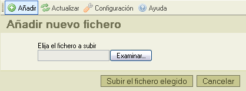

El botón "Subir" en la barra de herramientas , abre el "Pánel de Subida", que puede ser usado para agregar nuevos archivos a la carpeta actual, he aquí un screenshot de este pánel:

Para cerrar el pánel de subida, solo dé click sobre el botón "Cancelar", o haga click nuevamente sobre el botón "Subir" de la barra de herramientas.
* "Subir" es un término técnico. Se refiere a la acción de transferir un archivo situado en su computadora local a otra computadora central, (también conocida como Servidor).
Los siguientes, son los mensajes que podrían aparecer mientras se transfiere un archivo:
Indica que el nombre del archivo que subió ya se encuentra en uso por otro archivo en la misma carpeta, para evitar un conflicto, un número progresivo (aquel que estará entre los parentesis), ha sido agregado al final del nombre original.
El archivo que subió no ha sido aceptado.
La causa mas común de este menesaje, es que CKFinder ha sido configurado para NO aceptar el tipo de archivo que está usted intentando subir, basado en su extensión. Esta, es una restricción de seguridad. Otra causa puede ser que el tamaño del archivo es demasiado grande para el sistema destino, en este caso, el servidor deberá ser configurado para aceptar un archivo de mayor tamaño.
El archivo que subió contiene código HTML. Por razones de seguridad solamente archivos con ciertas extensiones son permitidos cuando contienen código HTML.
Por favor contacte al Administrador del sistema para obtener mayor información referente a los tipos de archivo aceptados y sus límtes en tamaño.